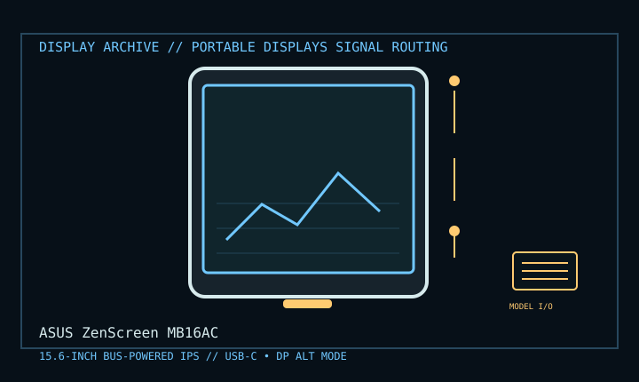

[ INDIVIDUAL COMPONENT // DISPLAY ARCHIVE ]
ASUS ZenScreen MB16AC
15.6-inch USB-powered portable IPS monitor from ASUS.

IDENTIFICATION: Match the exact model suffix, region and installed option boards to the cited manual and rear label. Do not infer electrical compatibility from connector shape.
Model-specific specifications
| Catalog class | Portable Displays |
|---|---|
| Exact product | ASUS ZenScreen MB16AC |
| Era / purpose | 15.6-inch USB-powered portable IPS monitor from ASUS. |
| Panel / image | 15.6-inch IPS, 1920 × 1080 native, 16:9; 220 cd/m² typical and 800:1 typical contrast. |
| Signal / connector | Single USB Type-C connector supports DisplayPort Alt Mode and USB data; hybrid USB signal solution supports selected USB-A hosts through ASUS software/adapter. |
| Power | Bus-powered, typical consumption under 8 W; the host USB port must provide sufficient power. Not an independent battery-powered display. |
| Mechanical | About 359.7 × 226.4 × 8.0 mm and 0.78 kg; folding smart cover works as stand; no height adjustment or VESA mount. |
Revision, timing & host compatibility
MB16AC is not interchangeable with similarly named MB16ACR/MB16AMT models. For direct USB-C video the host must support DisplayPort Alt Mode and adequate power. USB-A hybrid mode depends on ASUS driver/software and OS support; it is not a normal DisplayLink-free video path on every host.
Before operation, compare source signal type, scan/frame timing, pinout, interface bandwidth, input-board configuration and mains/DC rating against the model-specific manual and nameplate. A listed maximum mode is not a promise of optimum image quality.
Vintage preservation & repair notes
Keep the smart cover, USB-C cable and Type-A adapter together; inspect cable/port strain and cover hinge. Test direct Alt Mode and any legacy software path separately. Avoid twisting the thin chassis or applying pressure to the LCD; pack in a rigid sleeve.
Record serial/date code, configuration, all installed interface boards, accessories, image condition, calibration state, test source and document edition. Disconnect power before external cleaning and use only the manufacturer-approved procedure; do not open CRT/LCD/OLED equipment without qualified service practice.
Manufacturer manuals & specifications
- ASUS MB16AC Manuals & DownloadsOfficial model-specific driver and user-manual portal.
- ASUS ZenScreen MB16AC Technical SpecificationsManufacturer panel, connector and mechanical ratings.